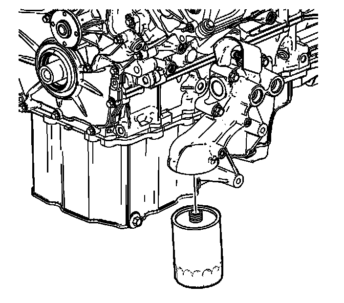
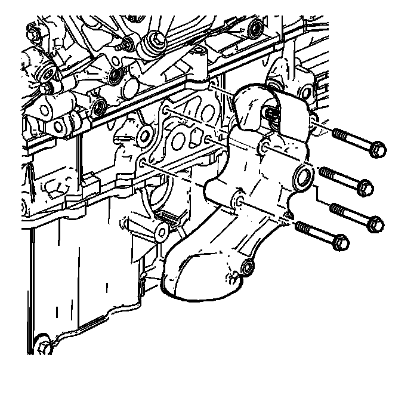
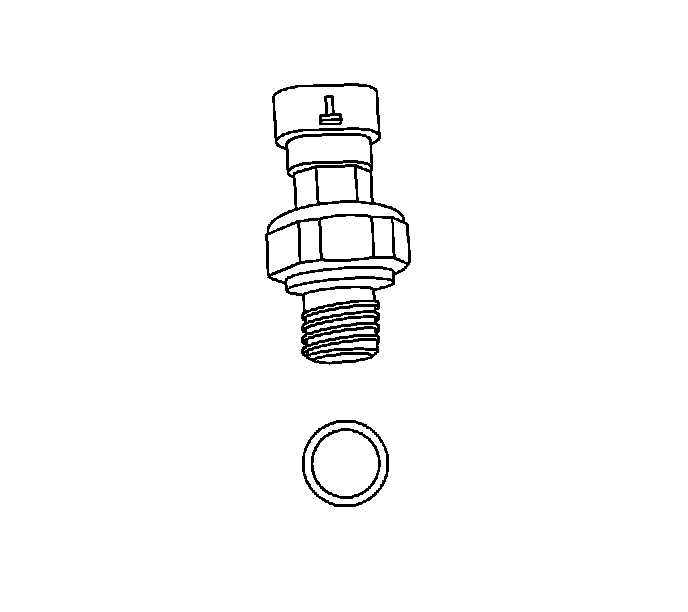

Oil Filter Adapter: Service and Repair
Oil Filter Adapter Replacement
Removal Procedure
1. Raise and support the vehicle. Refer to Lifting and Jacking the Vehicle (Service and Repair) .
2. Remove the left side wheelhouse splash shield.
3. Remove the left wheel drive shaft, if vehicle is equipped with all wheel drive (AWD). Refer to Front Wheel Drive Shaft Replacement - Left Side (Front Wheel Drive Shaft Replacement - Left) .

4. Disconnect the engine oil cooler lines from the adapter, if equipped.
5. Disconnect the electrical connector from the engine oil pressure switch.
6. Remove the oil filter.

7. Remove the adapter mounting bolts.
8. Remove the adapter and discard the gasket.
9. Remove the engine oil pressure switch from the oil filter adapter.
10. Clean and inspect the oil filter adapter. Refer to Oil Filter Adapter Cleaning and Inspection (Without Oil Cooler) (Overhaul)Oil Filter Adapter Cleaning and Inspection (With Oil Cooler) (Overhaul) .
Installation Procedure

Notice: Refer to Component Fastener Tightening Notice (Component Fastener Tightening Notice) .
1. Install the engine oil pressure switch to the oil filter adapter.
Tighten the engine oil pressure switch to 16 N.m (12 lb ft).
2. Install the new gasket.
Notice: Refer to Fastener Notice (Fastener Notice) .
3. Install the bolts attaching the oil filter adapter to the engine block.
Tighten the oil filter adapter bolts to 25 N.m (18 lb ft).
4. Lightly oil the replacement oil filter gasket with clean oil.
Important: Fill the oil filter with engine oil.
5. Install the oil filter.
Tighten the oil filter to 32 N.m (24 lb ft).
6. Connect the electrical connector to the engine oil pressure switch.
7. Connect the engine oil cooler lines to the adapter, if equipped.
8. Install the left wheel drive shaft, if previously removed. Refer to Front Wheel Drive Shaft Replacement - Left Side (Front Wheel Drive Shaft Replacement - Left) .
9. Remove the left side wheelhouse splash shield.
10. Lower the vehicle.
11. Adjust the engine oil level to the full mark.
12. Inspect for oil leaks after engine start up.